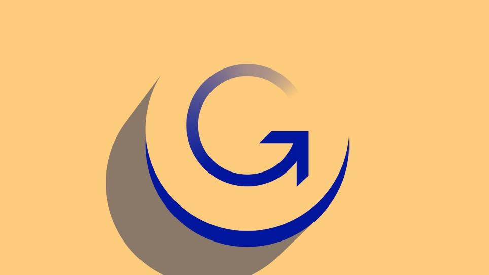
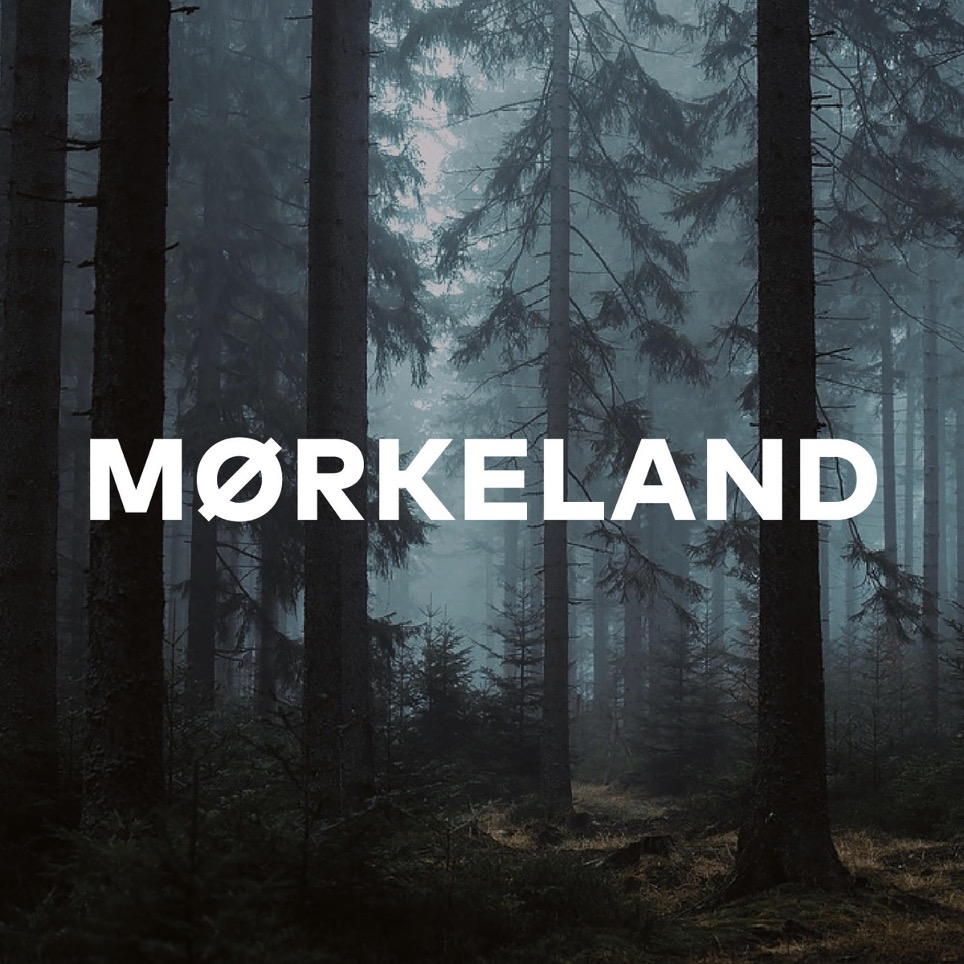

Anbefalinger | Podcasts
Stress af med 5 podcasts med potentialet til at blive en del af din daglige rutine.
Kan den larmende stilhed blive for meget når du er med toget, gør dig klar om morgenen eller når du studerer? Så berig din hverdag med en podcast! Her er 5 sprøde muligheder, hvor der er lidt for enhver smag.
1. Genstart – DR’s nyhedspodcast
Foretrækker du at holde dig opdateret og vil gerne høre de seneste og vigtigste nyhedshistorier? Så kan du få et unikt indblik i de aktuelle historier, og få besvaret spørgsmål du ikke vidste du ønskede svar på. Der kommer et nyt afsnit hver dag. Tjek den ud her.
2. TED Talks Daily
TED Talks Daily er et amerikansk podcast, med episoder der omfavner alle emner du overhovedet kunne komme i tanke om. Hvis episode titler som ”Am I normal?”, ”The billion-dollar campaign to electrify transport”, “The brain science of obesity” og “The art of paying attention” fanger din interesse, så er der meget mere hvor det kommer fra. Der er en ny episode hver dag.
Tjek den ud her.
3. Hva så?! Med Christian Fuhlendorff
Fuhlendorffs podcast tager os væk på en gå-tur med mennesker han beundrer, finder spændende eller som han føler har noget at byde på. Det er en snak om alt og intet, og selvom det ”bare” er en helt almindelig samtale mellem to personer, så er der altid et lille grin at hente hist og her. Et podcast der får en til at slappe af og reflektere, samtidig med at man får et indblik i nogle af Danmarks kendte og kreative sjæle.
Tjek den ud her.
4. Mørkeland
Er du til true crime? Så er denne podcast lige noget for dig! To danske kvinder skiftes til at fortælle om et mord, oftest danske drabssager, men også til tider udenlandske, når noget tankevækkende melder sig. Podcastseriens formål er at zoome ind på sindets mørke og forsøge at forstå årsagerne til drab, og samtidig blive klogere på dansk kriminalhistorie, indretningen af vores retssystem samt vores egen fascination af mørket i livet. En podcast der både skaber uhygge men også giver stof til eftertanke. Tjek den ud her.
5. Kalyn’s Coffee Talk
Denne podcast er opløftende og en skøn måde at starte dagen på, holde en ved selskab om aftenen, eller bare slappe af til efter en lang dag. Den består af dybe samtaler der dækker alt fra wellness, spiritualitet, mentalt helbred og læring, og opfordrer til at omfavne din egen ”sense of self”.
Tjek den ud her.
- af Laura Fast